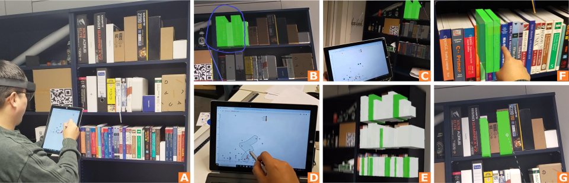

Brushing and Linking for Situated Analytics


Venue. VRW (2024)
Abstract. Situated analytics is visual analysis that is embedded in the physical world. Conventionally, the data related to referents (i.e., physical objects) is manipulated indirectly, through dedicated interaction devices or using separate abstract representations. The natural way of interacting in 3D space using direct manipulation with one's hands is hardly employed when abstract data is concerned. In this paper, we explore the idea of directly brushing and linking referents in the real world to analyze abstract data related to the referents. We discuss what brushing & linking means when applied to the real world, including multiple ways of selecting referents (brushing) in augmented reality, as well as different ways of linking with an abstract data view, presented on a dedicated display (a tablet). A proof of concept was implemented to test and demonstrate the capabilities of brushing & linking of referents. We conclude with a set of open research challenges that exist in this new and emerging area.